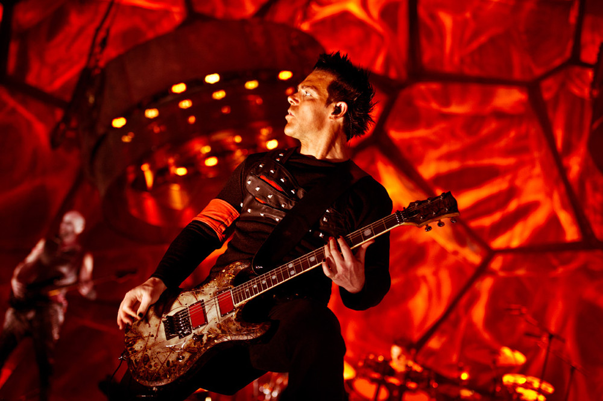

Пребывание Рихарда Круспе в Нью-Йорке формально началось браком с американской актрисой Карен Бернштайн в 2001 году. Однако, глупо полагать, что это является причиной смены творческой локации, сценической роли и образа музыки для Рихарда.
{kind=link}
Несмотря на то, что состав Rammstein не меняется с момента основания, в группе постоянно возникают конфликты и разногласия (даже не “копая” вглубь фактов об этом можно узнать из многочисленных интервью участников группы). В этом плане Рихард фигурирует как противоречивая и даже в некотором смысле эгоистичная личность.
Подчиняясь неформальному явлению демократии Rammstein, которая заключается в том, что окончательные решения группа принимает вместе после обоюдного согласия, не каждая идея соло-гитариста находит реализацию внутри коллектива, а также некоторые противоречия остаются неразрешенными. Результатом этого являются различные творческие перерывы или даже кризисы группы (можно отметить, перерыв после выпуска пятого студийного альбома Rosenrot, т.к. музыканты неоднократно отмечали в своих интервью то факт, что собраться на запись нового альбома было очень трудно и изначально работа над материалом давалась с большим трудом, что было связано с разногласиями музыкантов, в частности, противоречиями Рихарда Круспе). Причем, доходя до предела конфликт в группе имел исключительно производственный характер и не имел в себе личных неприязней музыкантов друг к другу.

В 2002 году Рихард окончательно переехал в Нью-Йорк. Здесь он начинает полностью обособленную от творческой сферы Rammstein жизнь и деятельность. Музыкант ограничил себя от сложившийся для него жизненной обстановки в Германии, сам Берлин он характеризовал негативным воздействием на жизнь (дошло даже до приема наркотиков). Переезд в штаты для него сравним с началом нового жизненного этапа (излечение от наркозависимости, изменения внутреннего мира).
К уже существующим идеям и творческим замыслам добавляются впечатления от жизни в Нью-Йорке, и Рихард реализует это все в собственном проекте с символическим названием Emigrate, особенностями которого являются: звучание, принципиально отличающееся от звучания Rammstein (ритм, инструментал, структура); англоязычные тексты; реализация Рихард в роли вокалиста и сочинителя.
Результат – два студийных альбома (Emigrate, 2007; Silent So Long, 2014).
Рихард и раньше демонстрировал слушателям свой вокал в записях и живых выступлениях Rammstein, однако в новом проекте происходит знакомство с совершенно иным образом и типом голоса, и, соответственно музыки.
После ознакомления с материалом Emigrate невольно вспоминается привязанность Рихарда к американской музыкальной культуре, ярко выражавшейся в начале творческого пути музыканта (здесь и его первый музыкальный опыт, и первая поездка в штаты с Тиллем). Безусловно, эта симпатия повлияла на результаты творческой деятельности в рамках проекта Emigrate, и, возможно, является одной из причин переезда Рихард в Нью-Йорк.
Город Нью-Йорк вдохновил его. Явившись сменой мрачному, отождествленному с отяжелевшим грузом Rammstein Берлину, американский мегаполис стал родным для Рихарда. Эти ощущения выражены во второй композиции Emigrate – New York City. Музыкант ассоциирует город с женщиной, для него он женственен (вспомним Moskau и текст к ней, написанный Тиллем, который тоже сравнивает город с женщиной, правда с ветренной).
Пребывание Рихарда в Нью-Йорке, вопреки ожиданиям и слухам, не привело к распаду группы, и мы лицезреем в настоящее время альбом Liebe ist fur alle da, который стал точкой возврата группы к прежнему единству на сценической арене.